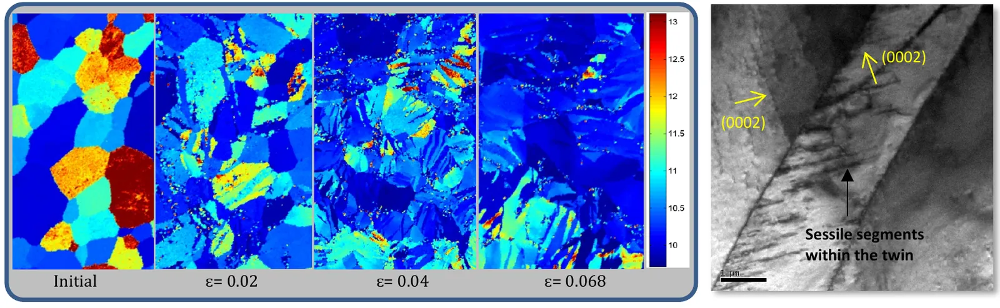

Impact
Impact on brass spheres
Cross-sections of brass spheres impacted at 22, 51 and 90 m/s. Grain-orientation spread from EBSD (top) is compared with effective plastic strain from LS-DYNA simulations (bottom).
Work of Sazid Khan (PhD)
Read more →Impact
Cross-sections of brass spheres impacted at 22, 51 and 90 m/s. Grain-orientation spread from EBSD (top) is compared with effective plastic strain from LS-DYNA simulations (bottom).
Work of Sazid Khan (PhD)
Read more →
High strain rate
Microstructure maps at increasing strain, up to 0.068, and a TEM image of sessile dislocation segments within a twin.
Work of Biswaranjan Dash (PhD) and Prasath Babu (post-doc)
Read more →
Computation
A high-throughput model for Ni3X compounds, compared with direct simulations for six fault types (adjusted R² of 0.96 to 0.99).
Work of K.V. Vamsi (PhD)
Read more →
Alloy design
DFT maps of how alloying elements favour the L12 (γ′) or D019 structure, used to design cobalt-base alloys with a stable γ/γ′ microstructure.
Work of Sri Raghunath Joshi (MTech) and Shailendra Kumar Verma (PhD)
Read more →
Phase stability
Phase diagrams at −20 and +20 GPa, showing the chemical binodal, chemical spinodal and coherent spinodal.
Work of Shiba Shankar Dash (MSc Res.)
Read more →Scroll or swipe for more
1 / 5We study how crystal defects (dislocations, grain boundaries, vacancies), microstructure and composition control plastic deformation, and we build physically based models that predict behaviour under extreme conditions. We combine mechanical testing, microstructural characterization and computation, from DFT to finite elements.
Armour laminates, impact of metal spheres, and constitutive models for high strain rates.
Read more →Design of nickel- and cobalt-base superalloys, titanium alloys and steels.
Read more →Planar fault energies, grain boundaries and phase stability.
Read more →Erosion, machine learning for impact, rare-earth-lean magnets, AI-guided alloy design and hydrogen embrittlement.
Read more →Our group is led by S. Karthikeyan, Associate Professor, Department of Materials Engineering, Indian Institute of Science.
Email: karthik@iisc.ac.in · Prospective PhD applicants and post-doctoral researchers: please email with a short note on your background and interests. See Join the group.
Courses and interactive teaching tools are collected on the teaching resources page.